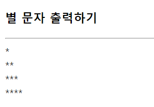
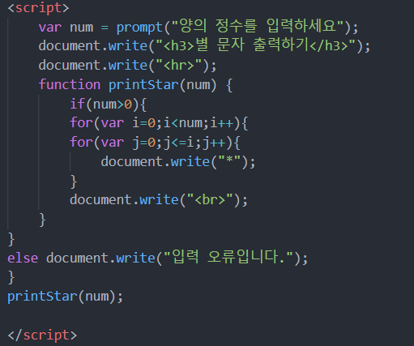

1. 함수란?
- 목적을 가지고 작성된 코드 블록
- 데이터 전달받아 처리한 후, 결과를 돌려주는 코드 블록
- 자바스크립트에서 함수도 객체다.
2. 함수의 선언과 호출
- 함수 선언문 방식
function 함수 이름(arg1, arg2, ... , arg n){
프로그램 코드
return 문;
}
--> 사용
var n = 함수 이름(변수1, 변수2, ... , 변수 n);
- 함수 표현식 방식
- 자바스크립트에서는 함수도 하나의 값처럼 취급됨 (일급 객체) -> 문자열이나 숫자처럼 변수에 할당 가능
- 익명함수 표현식 방법
EX)
var 변수 = function (arg1, arg2, ... , arg n)
{
프로그램 코드
return 문;
};
- 기명함수 표현식 방법
var 변수 = function 함수 이름(arg1, arg2, ... , arg n)
{
프로그램 코드
return 문;
};
- 함수 호출 : 함수변수(매개변수);
+ 기명함수_함수이름은 재귀호출 시 사용 가능
3. 함수 호이스팅
: 함수 선언 방식에 따라 동작 방식의 차이가 있음. 그 중에 하나가 호이스팅
4. 스코프 변수
: 스코프 - 변수 또는 함수의 유효 범위
- 자바스크립트로 HTML 콘텐츠를 웹 페이지에 직접 추가 가능
- 지역 변수 - 함수 내에 선언 / 선언된 함수 내에서만 사용 가능
- 전역 변수 - 함수 밖에 선언 / 프로그램 전역에서 사용 가능
- 자바스크립트에서는 선언한 변수가 함수 단위의 유효 범위를 갖는다.
- 만약 같은 이름의 함수가 만들어지면?
- 동일한 이름의 함수가 여러 개 정의되면 마지막에 정의한 함수만 남음
+) 호이스팅 적용
- 즉시 실행 함수 - 함수 선언과 호출을 동시에 하는 함수
5. 자바스크립트에서 제공하는 전역 함수
- parseInt() 함수 : 문자열을 10진 정수로 변환하여 리턴
- eval() 함수 : 문자열을 코드로 인식하게 하여 결과 리턴
- isNaN() 함수 : 매개변수가 NaN인지 비교하여 숫자가 아니면 true, 숫자면 false 리턴
- String() : 문자형 데이터로 반환
- Number() : 숫자형 데이터로 반환
- Boolean() : 논리형 데이터로 반환
6. 예제 ; 별 찍기
4 입력시 -> 
- 양의 정수 입력 받기, 0 이하의 수가 입력 되었다면 입력 오류 출력
- 이중 for 문 사용해 입력 받은 만큼의 별 문자 출력하기
예시 코드
